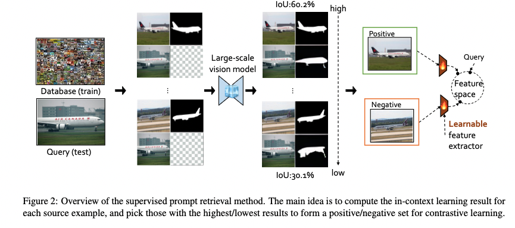
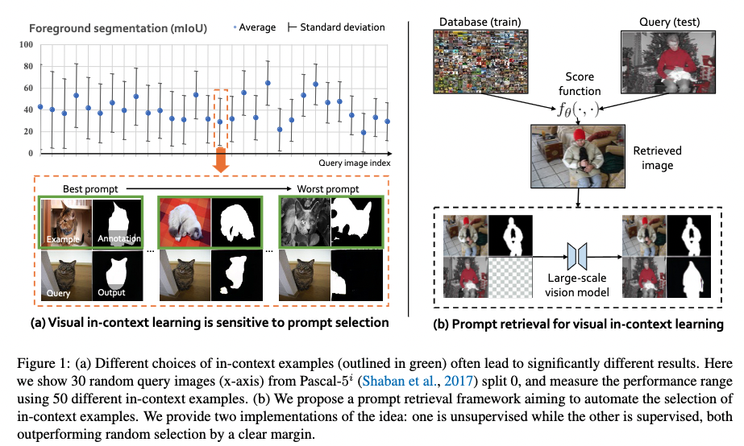
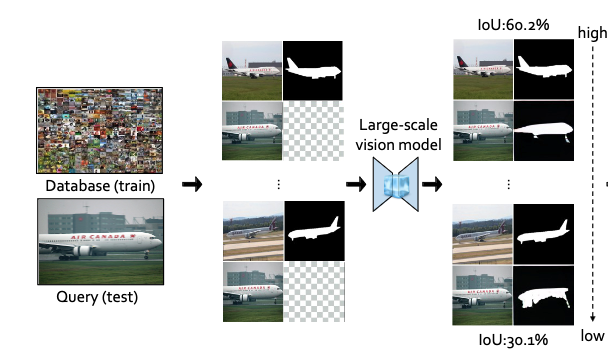

[TOC]
- Title: What Makes Good Examples for Visual in Context Learning
- Author: Yuan Zhang et. al.
- Publish Year: 1 Feb 2023
- Review Date: Mon, Feb 6, 2023
- url: https://arxiv.org/pdf/2301.13670.pdf
Summary of paper

Motivation
- in this paper, the main focus is on an emergent ability in large vision models, known. as in-context learning
- this concept has been well-known in natural language processing but has only been studied very recently for large vision models.
Contribution
- we for the first time provide a comprehensive investigation on the impact of in-context examples in computer vision, and find that the performance is highly sensitive to the choice of in-context examples.
- exposing a critical issue that different in-context examples could lead to drastically different results.
- Our methods obtain significant improvements over random selection under various problem settings, showing the potential of using prompt retrieval in vision applications with a Model-as-a-Service (MaaS) business structure.
- we show that a good in-context example should be semantically similar to the query and closer in context.
- A model that can better balance spatial and se-
mantic closedness in feature space would be more ideal for
visual in-context learning.
- yeah, it is because the model is not that smart in a way that it can directly tell the semantic regardless of what the spatial structure looks like
Some key terms
existing issue of using LLM
- Entities able to develop large-scale models typically only provide users with APIs, known as Model-as-a-Service (Maas). Representative examples include GPT-3. As a result, users are unable to apply full fine-tuning or some parameter-efficient tuning techniques, such as prompt learning for model adaption, largely limiting downstream performance
in-context learning
- without the need to update any parameter for previously unseen tasks, in-context learning simply prepends some domain-specific input-output pairs, called in-context example or prompt, to a test example, which together guide the model to produce an ideal result.
- in computer vision, we can pretrained a neural network to fill missing patches in grid-like images, which allows the model to perform in-context learning for unseen tasks like image segmentation.
sensitivity to the prompt selection
- choosing a good in-context example is essential for the performance

Method
- Using IoU of the segmentation to rank the in-context examples
- or using human labelling

- after that, train a learnable feature extractor such that the cosine distance between the feature vector of two similar images should be small, while two dissimilar images should have large cosine distance (contrastive learning)
- the trained feature extractor helps to retrieve in-context examples from a large dataset.
- looks like this method assists the model to do an interpolation